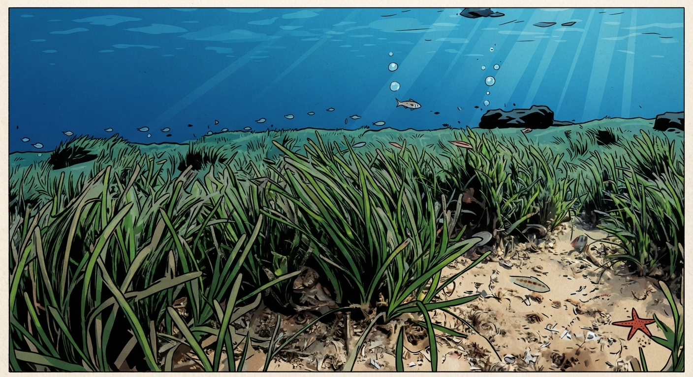
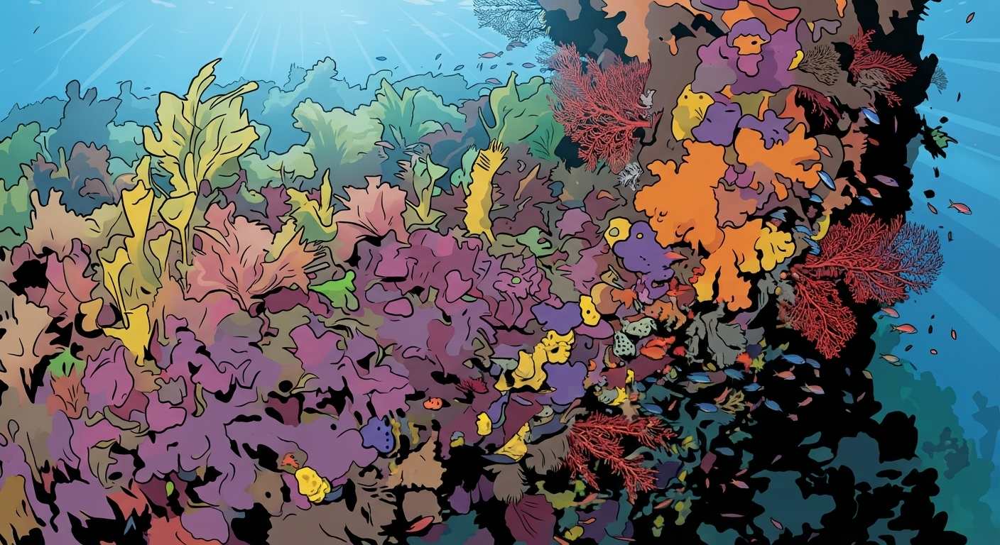
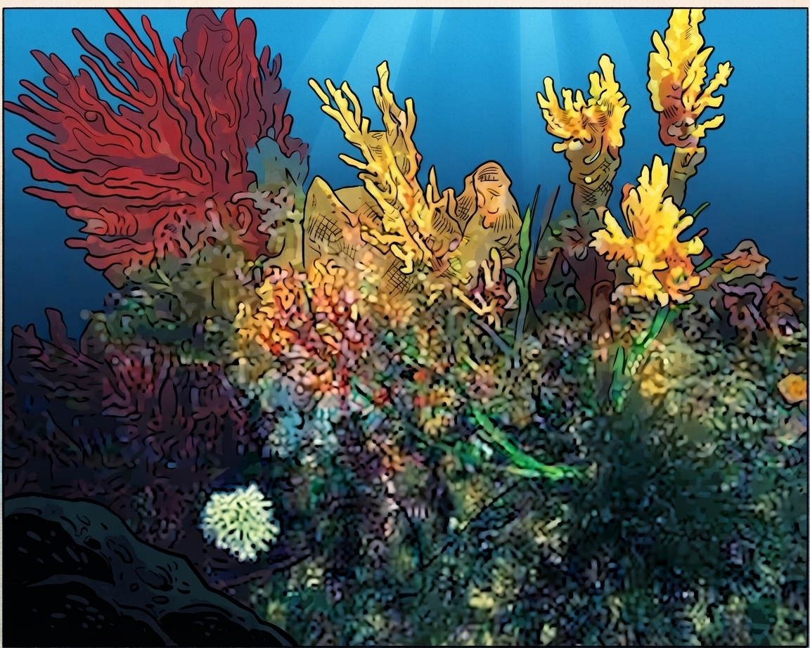
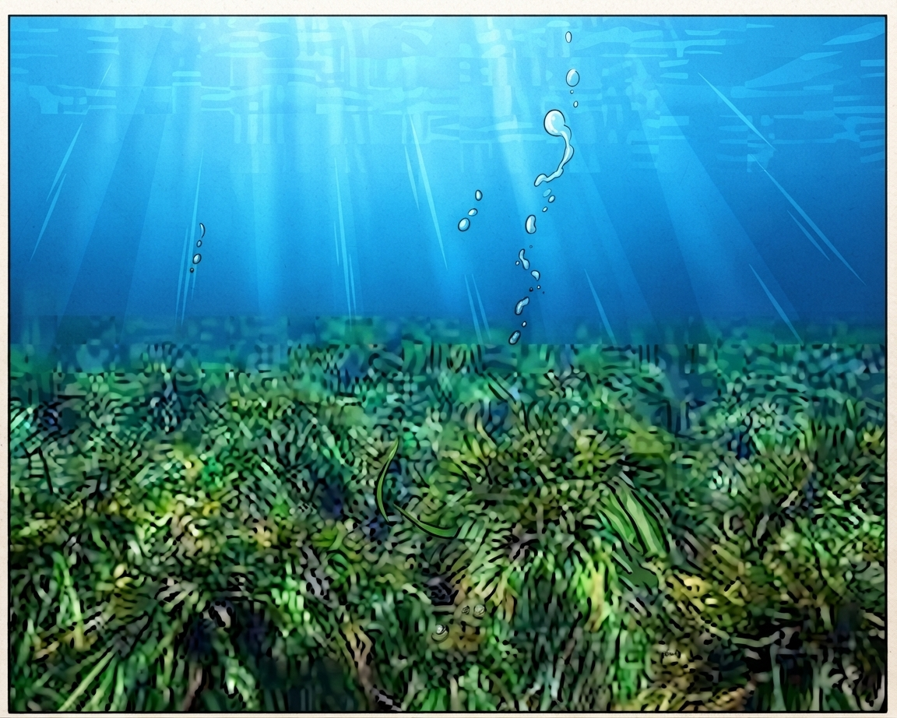

3: Flora, especies vegetales y praderas submarinas

Su flora dominante está integrada por extensas praderas de la fanerógama marina Posidonia oceanica sobre fondos arenosos, las cuales actúan como pulmones verdes y refugio de innumerables organismos. Asimismo, los sustratos rocosos y de corriente intensa albergan una rica variedad de algas fotófilas y comunidades coralígenas que otorgan un gran colorido y complejidad estructural a este ecosistema de transición.
Los fondos menos profundos y arenosos acogen praderas de fanerógamas marinas, destacando la Posidonia oceánica y la Cymodocea nodosa, auténticos pulmones verdes que generan oxígeno, estabilizan los sedimentos y sirven de guardería para decenas de especies de peces e invertebrados.
En los sustratos rocosos e iluminados proliferan diversas comunidades de algas fotófilas, mientras que en los enclaves más profundos y oscuros dominan las concreciones coralígenas formadas por algas calcáreas asociadas a madréporas y esponjas únicas (como Axinella alborana).


